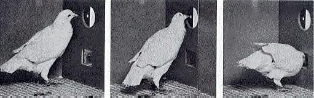
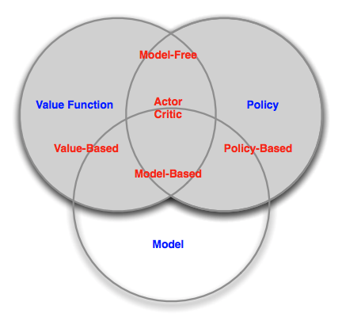
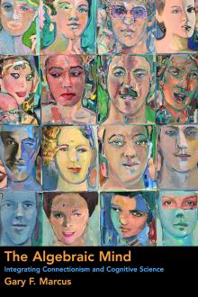

From Behaviorist to Constructivist AI
Saturday April 29, 2017
B. F. Skinner might be satisfied that neural networks achieve intelligence when they perform tasks well. This behaviorist perspective leads to misunderstandings of current technology and limits development toward systems that think. Pervasive epistemological confusion about categories is one example. In general, a constructivist approach will become necessary for advanced machine learning and artificial intelligence.

Training a neural network by backpropagating from a loss function is a lot like operant conditioning. Error becomes punishment. The objective and result of eliciting particular behavior is the same whether you're doing object detection with a pigeon in a Skinner box or with a convolutional neural network.
Little could be less like real intelligence than blurting out a name for every object you see. Little could better epitomize behaviorist stimulus-response. This is the intelligence of the ImageNet classifiers that popularized deep learning.
These classifiers really shouldn't be anthropomorphized. A cat/dog classifier is not thinking about cats and dogs. An engineer designed the network with a cat neuron and a dog neuron, and got them to light them up as desired.
An image classifier has continuous input and categorical output. The categories are specified by design. This is clearly a limitation on the output side, and a very different limitation from any constraint on the input side in image resolution or color space. A cat/dog classifier cannot say anything other than cat and dog.
One could argue that this output is not strictly categorical because it might be read, for example, as 95% cat and 5% dog, but this does not undo the designed categories, and this sort of non-Dirac enhancement is not generally provided when systems take categorical input.
Language models are frequently categorically constrained in both input and output. At the word level, this means a model can't deal with words it's never seen before. This leads to approaches like Google's neural machine translation falling back to subword units for rare words. But even if a language model goes to the character level, this is still a categorical constraint, and a system trained on "e" could be perfectly blind to "é."
Whether categories are imposed on the input or output side, they make it obvious that the system is limited. The system cannot handle categories not specified in the design.
Categorical input is also foreign to humans. It would be like having a separate sense for every category. Instead of feeling "warm" or "not-warm", for instance, you could feel "cat" or "not-cat" and "dog" or "not-dog," and however many more. But if you didn't have a sense for "aardvark," you would be congenitally blind to "aardvark."
Continuous sensor data, like images and audio, is much more interesting and analogous to the human experience. There are still limitations - for example, you don't really see the edges of your field of view, and you can't really imagine what sensing magnetism would be like - but unstructured input provides a starting point for forming gestalt perceptions.
Word embeddings, or word vectors, might seem to handle the categorical problem, but this is largely misdirection. Word embeddings are representations of words that have fixed dimensionality, so that a language system no longer needs a separate input for every possible word, but only a separate input for every dimension of the word embeddings. There might be 50,000 words, but only 200 or 300 dimensions for an embedding.
Using word embeddings doesn't solve the categorical problem; it just pushes the problem to the embeddings. A system can still only handle words that embeddings have been generated for.
Word embeddings are useful in that they are representations of words that tend to give good results when used as input to various algorithms. In the same way, convolutional classifiers learn representations of images that tend to give good results when used as input to other algorithms. In both cases, having a good representation is useful. In both cases, people may or may not find the representations interpretable.
There tends to be excitement about the meaningfulness of word embeddings when people amuse themselves with arithmetic like king - man + woman = queen, or make visualizations with reasonable-seeming clusters. But the understanding that's happening here is happening in the people; having nice representations does not mean that a system has achieved understanding.
It seems important that an intelligent system should be able to develop internal concepts without those concepts being built into the system's design, so there was interest when Google found a cat neuron in a 2011 system.

The system was trained to take an image as input and generate the same image as output. This is easy for a computer to do just by copying, so to make it interesting you have to put restrictions on the flow of information from input to output. The restricted system learns good representations for the images. Then, by testing lots of images with and without cats, Google found one point in the system that tended to respond positively to cats and negatively to other things.
The temptation is to declare that the system formed an idea of cats. You could just as well say that a mold formed an idea of its cast.
Visual systems learn many useful internal representations. For example, they learn oriented edge detectors. Humans have these too. It should be clear that in neither case is there an idea of an oriented edge. The Google researchers were correct in their paper's title when they said that their system learned high-level features rather than concepts.
More recently, OpenAI's unsupervised sentiment neuron is another case of humans interpreting neurons. The model is categorical at input and output on the character level, learning to predict the next character in text. OpenAI used all 4,096 dimensions of their learned representation, but their title comes from noticing that just one of those dimensions captured a lot of sentiment-related information.
Word embeddings are patterns of activation over perhaps 300 neurons. They are distributed representations. A cat neuron or sentiment neuron, on the other hand, is in line with the implausible "unit/value principle" that a single neuron represents a single concept.
It is easy to think that words are categories, and so a distributed representation of a word is a distributed representation of a category. With images, it's clear that one picture of a cat is different from another picture of a cat. But words are not categories. The difference between words and images is principally one of cardinality (there are many more images than words) and composibility (images more easily contain many things). But just as a word vector for cat is close to a word vector for kitty, distributed representations for pictures of cats should also be close to one another, and the Google system could just as well have been mined for distributed representations. Perhaps it is the human desire to categorize that makes us comfortable with multi-dimensional representations when we've provided categories in advance, but look for single-dimensional representations when we haven't. (Or maybe it's just easier.)
Regardless of whether distributed or unit representations are better, having a representation does not imply thought. These representations flash through their networks, coming before the result like Pavlovian slobber. This is not to say these representations couldn't be used in a system that thinks, but that current usage is too limited. One thing that's missing is state that develops over time.
Sequence models (such as the sentiment neuron example) introduce a limited kind of time-awareness, and a kind of memory. There could be something here (attention in particular is interesting) but most usage still seems to be learning representations and doing encoding to and decoding from these representations.
To be clear: Good representations are useful, whether or not they are utilized for anything like higher-level thought. But it seems unlikely that conventional models used in supervised or unsupervised learning will spontaneously invent higher-level thought, no matter how good their representations are.
By its name, reinforcement learning seems purely behavioristic, but it also recognizes the idea of internal models, as illustrated in David Silver's taxonomy of reinforcement learning agents. These models are generally something like an agent's internal conception of the world around it.

Lots of reinforcement learning is model-free, and where there are internal models they are often heavily specified in advance or quite distant from what we think of as mental models. The idea, if not current implementations, is key. The behaviorist perspective is one of only inputs and outputs. Model-based reinforcement learning suggests, at least in spirit, a missing piece. Humans certainly aren't model-free, for example.
What the constructivist perspective adds is that it isn't enough to simply have an internal model. Intelligence entails building and working with new models as a part of problem-solving.
One view of building different models for different situations might be selectively enlisting parts of a large system for a given task. PathNet tries to "discover which parts of the network to re-use for new tasks." This is interesting, but the focus on selecting a subset of wiring seems distant from the imaginative process of building a mental model, likely drawing on representations which may be distributed.
It becomes important to understand how a representation behaves. Say a system does have a cat neuron; can it reason about cats? The cat neuron can be excited, but this seems more like experiencing the quale of cat-ness than like imagining a cat. Experiencing an emotion is even more clearly not an abstraction, so the case of a sentiment neuron makes this distinction even clearer.
Imagining a cat might be an algebraic operation, in the sense that it posits an entity, a variable, which has cat properties or is a cat. In The Algebraic Mind, Gary Marcus argues that connectionist (neural network) models lack this kind of kind of ability.

An intelligent system should be able not only to represent things but to build and manipulate models composed from these representations.
For example, whether you like Chomsky or not, understanding a sentence seems like an algebraic procedure in the sense of apprehending values for variables like subject, verb, and object. The plug and play composability of noun phrases and the like also suggests a constructive mental process.
Or take the example of number: can a system perceive that a picture has three cats, as opposed to two cats? There's some depth here, as a system could represent two or three entities all of which are cats individually, or it could represent number concepts explicitly. It's hard to find current models that do either in a meaningful way.
The Algebraic Mind was published in 2001. There have been many advances in machine learning since 2001, but they largely haven't been advances toward reasoning. In this sense, Marcus thinks artificial intelligence is in a rut.
If you take the view that machine learning is a type of statistics, then you may not care about any of this. But for machine learning as artificial intelligence, it may be that algebraic (or symbolic) considerations will be necessary.
A fair criticism is that if it isn't clear how to make direct progress in the constructivist direction, time is better spent advancing what have become traditional techniques. There is certainly value in this kind of advancement.
There may also be some reason for hope in differentiable neural computers (DNCs) and related work. In some ways, the linking of DNC memory locations is like Marcus's proposal for representing structured data, and the DNC memory itself is something like Marcus's idea of registers. But it looks like DNCs work with categorical input and output, relying on it for seemingly algebraic task performance.
It seems likely that artificial general intelligence will use a composite approach. It may process visual input with convolutions. It may use distributed representations for internal concepts. It may access memory along the lines of a differentiable neural computer. It may have an attention mechanism that allows it to focus on the state of the external world one moment and its internal world the next. Combining all these ideas into a system that can come up with its own ideas is an intriguing project.
“There is no reason, as yet, to be confident that an intermediate symbolic representation will not be required for modeling higher cognitive processes.” (Feldman and Ballard, 1982)